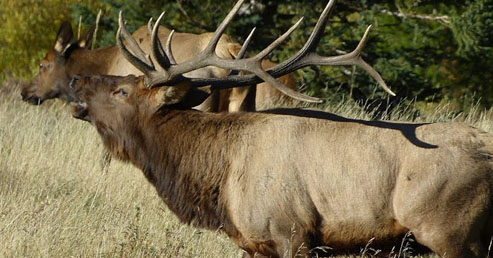
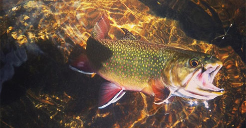
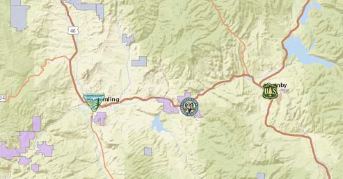

The Colorado Parks and Wildlife Atlas
Welcome to the Colorado Parks and Wildlife Atlas. Serveral interactive maps are available. Please pick from the selection below to load the atlas of choice.
Click here for additional CPW mapping resources
.

The Hunting Atlas
The Colorado Hunting Atlas allows users to view big game concentrations and game management units on top of street maps, USGS topographic maps or high resolution color aerial photography. The Hunter Resource Report allows hunters to create a list of important emergency and contact information, field office locations, campgrounds, CDOW license agents and more.

The Fishing Atlas
The Colorado Fishing Atlas allows users to search for fishing opportunities by species, specific interest, or proximity to your home or destination. Use the simple map interface to locate and view recommended opportunities for the family, remote fly fishing, or ice fishing all on top of street maps, USGS topographic maps, or high resolution color aerial photography.

The Property Finder
The Colorado Property Finder allows users to view and search for CPW public access properties, US Forest Service offices, BLM offices, CPW offices and facilities on top of street maps, USGS topographic maps, or high resolution color aerial photography.